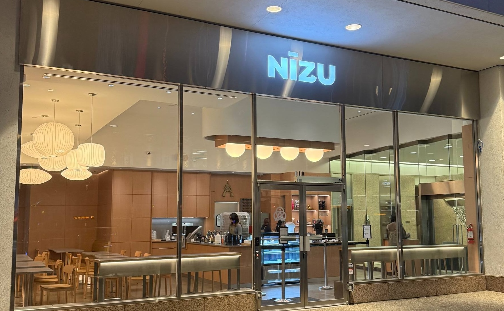

Matcha
Shizuoka · First harvest · Tsuyuhikari
Our everyday matcha is stone-ground from first-harvest leaves of a single cultivar, Tsuyuhikari, grown in Shizuoka. Bright and grassy with a gentle sweetness, it holds its own in a latte.

Coffee, matcha, & baked goods · Vancouver
A cozy Japanese-inspired cafe serving matcha whisked to order and coffee roasted within the week.
Take a look at our food and drink menus!
![Nizu food menu, served until 3pm. Snacks: Karaage with shoyu ginger marinade and yuzu kosho Kewpie, 12.0; Poteto fries with bonito, aonori and curry Kewpie, 8.8. Katsu sandos, each with fresh panko, yuzu slaw and shokupan: Tonkatsu, 72-hour cured pork loin, 15.0; Nasu Katsu, vegetarian, shoyu glazed eggplant, 15.0; Ebi Katsu, quarter-pound shrimp patty with tartar, 18.0; add Poteto nori fries and curry Kewpie, 3.80. Yoshoku-style pasta: Mentaiko with rich mentaiko sauce, tiger prawns, shiso and spaghettini, 25.0; Tomato Sake with sake, cherry tomatoes, togarashi, chashu and grana padano, 18.0; gluten-free pasta 2.50.](assets/menu-food.jpg)
Snacks, katsu sandos and yoshoku-style pasta, served until 3pm.
![Nizu tea menu. Teas from Shizuoka, first harvest: Matcha, single cultivar Tsuyuhikari; Matcha Reserve, private lot, single cultivar Okumidori; Hojicha, medium roast, single cultivar Yabukita. Japanese tea lattes: Matcha, hot 12oz 7.0 or iced 16oz 7.5, add 1.5 for Matcha Reserve; Hojicha, hot 12oz 6.8 or iced 16oz 7.3. House crafted selection: Banana Matcha with whipped banana puree and caramelized brown sugar, iced 8.5; Craft Cola, an infusion of spices, citrus peel and botanicals, iced 6.0; Miso Caramel Latte with aka miso caramel, espresso and kuromitsu drizzle, hot 7.5. Add-ons: extra shot 1.5, syrup 1.0, oat milk 0.75.](assets/menu-drinks-1.jpg)
Single-cultivar matcha and hojicha from Shizuoka, tea lattes, and house drinks like the miso caramel latte.
Drinks, sandos and pastries from the counter, rotating with the season. Choose anything to see it larger.
Our grandmother whisked one bowl every morning for sixty years. We built a counter so other people could borrow the habit.
Shizuoka · First harvest · Tsuyuhikari
Our everyday matcha is stone-ground from first-harvest leaves of a single cultivar, Tsuyuhikari, grown in Shizuoka. Bright and grassy with a gentle sweetness, it holds its own in a latte.
Shizuoka · Private lot · Okumidori
A small private lot of the Okumidori cultivar, also from Shizuoka’s first harvest. Deeper and mellower, with rich umami and little bitterness, it is best whisked on its own.
Walk in, sit down, and enjoy the cozy, calm vibes. We have a mix of window bar seating and group tables available.